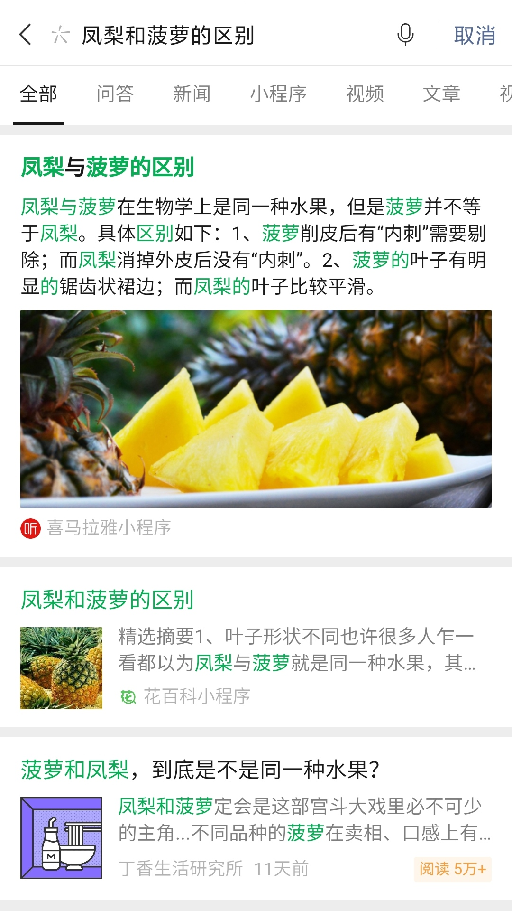
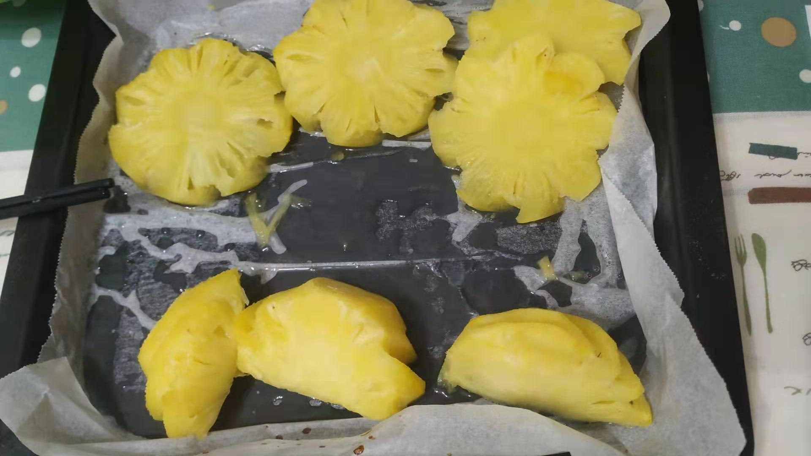
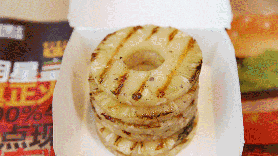

前段时间，海关总署发布通知，由于自 2020 年以来台湾菠萝多个批次检测出有害生物，暂停台湾地区的菠萝入境。
本文写于 3 月，只是因为各种原因一直没写完发表。
太长不看
- 凤梨就是菠萝，没有任何区别。叫法的区分更多是商业上的品牌营销。
- 菠萝扎嘴可能是蛋白酶、草酸钙结晶和粗纤维划伤综合后的结果。
- 但无论是哪种因素，泡盐水都起不了什么作用。
- 除了买熟透的菠萝，最好的办法是加热。除了做成佳肴，还可以选择炙烤，给菠萝增加一道焦糖风味。
18 公斤不能当真
事情发生之后，大陆这边影响不大，因为本身海南和广东很多地方都产菠萝。其中徐闻占据国内约 40% 的产量。徐闻菠萝还趁热度做了一波营销，知名度和价格都打了翻身仗。
但对台湾地区来说，影响就比较大。销往大陆的菠萝，虽然只占产量的10%，占总贸易量的比例也不大，却占据菠萝外销量的 97%。被禁会对菠萝价格产生很大的冲击，首当其冲受到影响的就是果农的收入。岛内媒体讨论得热火朝天，然后就有『名嘴』说出了『每人每天18公斤，四五天就解决了』的知名言论。
这种言论当然不能当真。稍微了解过对岸媒体言论的人都知道，因为媒体竞争激烈，加上没有相应的管治措施，那些看似正经的电视节目上都总是语不惊人誓不休，为收视率什么话都敢说。这些节目更接近大陆这边的朋友圈标题党，而不是看起来对标的卫视节目，明白这点就好理解多了。
虽然言论不靠谱，但作为一个菠萝爱好者，就让我也标题党一把，蹭蹭这（过时的）热度，聊聊菠萝该怎么吃。
菠萝？凤梨？
你可能会说，等等，台湾的不是凤梨吗？
台湾产的是凤梨，也是菠萝。因为凤梨就是菠萝，两者没有本质区别。
你说不对啊，我看网上的文章说，菠萝有『钉』，凤梨『钉』很小或没有；菠萝『扎嘴』要泡盐水，凤梨不用泡……

说来话长，让我『稍微』解释一下。
水果中贵族南美菠萝
菠萝是属于禾本目(Poales) 凤梨科(Bromeliaceae) 凤梨属(Ananas) 菠萝种(Ananas comosus) 植物的果实，原产南美洲。在欧洲人踏足南美洲之前，菠萝已经有多个世纪的种植历史。据《拉鲁斯美食大全》所说，菠萝在 15 世纪被哥伦布带回欧洲。也有说法菠萝在 16 世纪之后才传到欧洲（哥伦布死于 1506 年，也就是16 世纪初）。
无论菠萝是不是由哥伦布本人或他的船队带回欧洲，菠萝传播到欧洲大概率还是可以归功于哥伦布的航行。自哥伦布发现新大陆之后，地球上各个大陆之间的交流剧增，这里面包括自然生物、农作物、人种、文化、传染病乃至思想观念，对世界历史的走向产生了深远的影响，史称『哥伦布大交换』。
很多我们早已习以为常的作物，包括玉米、辣椒、番茄、番薯（地瓜）、棉花、花生、（番）木瓜、土豆、南瓜、草莓、烟草……（名单太长不列了），就是在这个过程里传到欧亚大陆。（我看宋代的剧为什么会看到玉米地啊(╯‵□′)╯︵┻━┻）
由于欧洲的气候并不适宜种植菠萝，在很长一段时间里，菠萝是只有皇室贵族才有机会接触到的水果，代表着异国情调、权力与财富。这也是菠萝在欧洲传播非常缓慢的原因，使得菠萝在欧洲不同地方的记载，传入时间差距很大。即使后面好不容易发明了温室种植法，菠萝的种植成本依然很高（温室内要一直烧炭火保温保湿），只是从贵族扩展到了富人阶层。
这就导致了一些现在看来匪夷所思的行为。各种绘画、建筑、装饰里出现菠萝作为权力和财富的象征，还好理解；皇室和贵族在宴席上放几个菠萝，但往往只是装饰，并一定会吃掉，也就算了。为了模仿皇室的宴会，普通人开始租（对，你没看错，租）菠萝在宴席上撑场面，吃是不可能吃的，吃掉了拿什么还。
直到现在，新鲜菠萝在欧洲很多地方还是少而贵，属于小奢侈的水果。日本的情况也类似。小时候看动画，主人公往往要碰上重要场合收到菠萝当礼物（很多年没见的叔叔来看我），才有机会吃到一个菠萝，吃的过程非常郑重，充满了仪式感。
我生长于广东十八线小县城，菠萝成熟的时候，街上到处有小摊贩在卖，几块钱一个，几毛钱一块，即使当时家里比较拮据，偶尔几块菠萝还是吃得起的。怎么发达国家反而吃不起的样子？对此非常疑惑。
波罗与番梨
按网上找到的说法，菠萝大概是跟随葡萄牙人，在明末 16 到 17 世纪之间传到广东。流传最广的说法，是先到澳门，再往不同方向传播，在清朝康熙年间传到台湾。
因为传播路径复杂，又是舶来品，在结合当地人的认知和方言之后，菠萝有了一大堆的名字。抛开那些故纸堆里的（疑似）曾用名，现在还在用的名字有 菠萝（粤语）、番梨（潮州话）、黄梨（客家话、东南亚华人）、王梨（闽南地区，谐音旺来）、凤梨（台湾地区）。
这些名字可以很容易地分成两类：菠萝，以及 X梨。对于 某梨的叫法，虽然第一个字不同，但在各自的方言里，发音都非常接近。我们可以合理地推测，这两类命名是两个不同传播路径产生的。
在粤语（更准确说是广府话）地区以及往西传播的过程中，明显是因为长得有点像，参考了同样是舶来品的波罗蜜（隋唐时从印度传入中国，叫『婆那娑』，宋改称波罗蜜，这明显是受到了佛教的影响），称作波罗，后来强调是植物，加上了草字头。有趣的是，后来菠萝在广东变得更为普遍，波罗蜜反而少见一些，有些地方开始称波罗蜜为『树菠萝』。不过波罗蜜仍然是正式名称。
而在一系列 X梨的路径里，无论从传播顺序，还是含义的演变看，番梨都更像是开始的命名。外来的事物，称番，像番茄、番石榴、番木瓜。但这个番字，在天朝上国华夷之辩的思想里，暗含贬义。在继续传播的路上，越来越本土化，大家会有意无意回避『番』字，给出相近发音下，其它『合理化』的雅称：果肉是黄色、吃了旺来、叶子像凤尾……
当然，也可能不是这样的顺序。但相邻的方言区，不约而同地用相近的发音称呼，不管是谁影响谁，无疑是一个来源。另一个证据是，包括台湾的地方府志在内，历史上这些地区的记录里，菠萝的称呼并不固定，几个叫法都有出现过。台湾到了后面才逐渐固定使用凤梨这个名字。
大陆这边，在罐头生产和生鲜运输把菠萝送出两广（包括建省前的海南）和福建地区之前，其他大部分地区对这个水果是没有概念的。到后来全国各地可以吃到菠萝的时候，一方面粤语区的产量比较大，另一方面珠三角的经济发达影响力强，菠萝就逐渐成为通用的中文名。
菠萝在分类学上的科和属，是直接借用日本学者定的科名、属名。而对于日本来说，凤梨科的植物都是外来物种，命名明显受到台湾地区的影响。
城里的Jennifer，也是村里的翠花
如果只是到这里，那么菠萝、番梨、黄梨、王梨和凤梨，都只是同一种水果在不同地方的俗称。此时的称呼差别，更多与民俗方言相关，并非以海峡为界，更没有没有涉及品种差异。除了粤语区比较固定地称为菠萝，粤东、闽南和台湾整个广义的闽南方言区，几个 X梨 的称呼很长一段时间都有混用。引种东南亚品种，还有各种品种改良，是在不同称呼之后的事情。
潮汕-闽南地区，同时受到两边的影响，既有跟粤语区叫菠萝的地方，也有叫王梨、凤梨的时候；连海峡对岸，也有称呼菠萝的时候。而脱胎于闽南式婚嫁礼饼的凤梨酥，无论在岛内还是在闽南地区，无论馅料用的凤梨还是菠萝，都不妨碍它按照习惯叫凤梨酥。
直到后来，台湾经过多年的农业技术研究，培育出多个高甜少刺的特色菠萝品种，才开始专门区分，将这些品种称为凤梨，而将进口菠萝和纤维较粗的『开英种』和『本岛仔凤梨』称为菠萝。这更多是一种出于商业考量的品牌打造，无可厚非。早年台湾地区比大陆发达，是大陆羡慕的对象，将『凤梨』跟高甜少刺、发达地区的高大上绑定，以售出高价，是成功的营销。但为了保持这种高大上，刻意区分，否认凤梨也是菠萝，就属于混淆视听了。
这跟『樱桃』和『车厘子』还不完全一样。因为它们两者是同为李属(Prunus) 下的不同种(species)，我们一般所说的樱桃指『中国樱桃』(Prunus pseudocerasus) ，而车厘子指『欧洲甜樱桃』(Prunus avium)。它们分别都是当地的原生物种，刻意区分可以理解，不光是翻译的差异。
菠萝和凤梨更接近『猕猴桃』和『奇异果』的关系。中国就是猕猴桃的原生地。奇异果则是新西兰人用湖北带回的种子，一代代培育而成的。经过培育之后，奇异果的差异已经比较大，商业上当然可以专称以示区分，但不可以否认奇异果就是猕猴桃的一个品种（breed）。
吃肉的水果
相信你已经明白，凤梨就是菠萝。只是叫凤梨的，大概率是台湾的品种。大陆也有自己的改良品种，也有引种台湾的优良品种，视乎宣传需要，有叫菠萝的，也有叫凤梨的。
那为什么有些菠萝吃之前要泡盐水，有些不用呢？
大家的回答普遍是：『扎嘴』，泡盐水可以缓解。
要是你继续追问，为什么会扎嘴，又为什么泡盐水可以缓解，大家就不怎么答得上来了。
扎嘴的是什么
实际上，就这么『简单』的问题，也没有一个非常确切的答案。根据可以查到的资料，扎嘴的原因按出现频率从高到低分别是：
菠萝蛋白酶
这是最广泛的说法。大部分情况下也是唯一的解答。
菠萝含有多种蛋白酶，可以分解蛋白质。我们的细胞组织也是由蛋白质构成，其中包括黏膜细胞。所以吃完菠萝之后，蛋白酶会分解一小部分接触到的蛋白质，造成我们的舌面和口腔黏膜损伤。形象地说，就是我在吃菠萝的时候，菠萝也在吃我。
菠萝本身糖分和有机酸含量很高，又会进一步刺激到这些小伤口，于是就会产生刺痛感。
除了菠萝以外，很多水果都含有蛋白酶，包括木瓜、猕猴桃等。利用这个特性，用果汁腌肉有嫩肉的效果。市售的嫩肉粉，一部分的原材料就是木瓜粉。
如果腌肉时放几块新鲜的菠萝，一不小心忘冰箱里过夜，那么第二天很可能会得到一份糨糊。
草酸钙结晶
有人说，不对啊，酶反应需要时间，但我吃菠萝是入口就感觉到刺痛。另外，有蛋白酶的水果不在少数，为什么很少听说别的水果扎嘴呢？
于是有人提出了另外一种可能：菠萝中含有的草酸钙（针状）结晶造成了刺痛。与此类似还有菠菜和芋头。我没生吃过菠菜和芋头，但是削过芋头后那手确实又痒又痛。
粗纤维
可以划伤刺痛黏膜的，除了草酸钙针晶，还有可能是一些菠萝品种的粗纤维。
以上三点，究竟哪个是真正/主要原因，至少我没有看到一个决定性的结论。我和稀泥地倾向于，都起了一定的作用，但是所占比例未知。
毕竟扎嘴是一个很主观的感觉，每个人对不同因素造成的扎嘴耐受程度也不同。
不要扎嘴
受益于良种选育和保鲜技术的发展，现在的菠萝含有更少的蛋白酶和草酸钙，果肉纤维更细，扎嘴的困扰就会少一些。
想不扎嘴，首先就要挑选这些不扎嘴的名优品种。这样看，贵价的凤梨貌似还是有一些价值的。我也见过网上有卖主打不用泡盐水直接吃的手撕菠萝。不过我没试过，大家自己决定要不要相信。
其次，尽量挑选成熟的菠萝，蛋白酶、草酸钙和粗纤维会少一些。一个技巧是，其它条件一致的前提下，尽量挑选产地比较近，运输时间短的产品，因为运输时间越长，果农越是需要提前采摘，让果实在运输途中放熟而不是放烂。放熟和自然成熟差别还是比较明显的。
但如果说因为条件限制，没得挑，菠萝已经买好了，还有没有办法降低扎嘴的程度呢？泡盐水吗？
很遗憾，盐水的作用可能只是聊胜于无。
酶首先是一种蛋白质（但它不会分解自己）。要想蛋白酶失活，可以是加热到一定温度，可以是加入重金属，或者其他毒素、强辐射等。
单靠氯化钠溶液的话，首先需要浓度很高，至少需要 7% 以上，这样的盐水需要非常咸。其次需要泡很长时间，让盐水渗透到果肉内部，而不是停留在表面。
最关键的是，蛋白酶仅仅是因为盐析作用溶解度降低而无法作用，这个过程是可逆的。只要盐水的浓度下降（例如被你分泌的唾液稀释），蛋白酶又可以重新起作用。
而对于草酸钙结晶和粗纤维，我完全看不出盐水能起什么作用。可能就是一个生理盐水缓解不适的作用。
于是乎就出现了，盐水不是用来防扎嘴，而是用来凸显甜度的言论。你看，玄学开始出现了。
不如加热
既然盐水不靠谱，又不能往食物里下毒，最简单有效的方法其实是：加热！
大部分蛋白加热到 70 度以上 5 分钟（或者更高温度并缩短时间），都会发生不可逆的变性。这里面当然包括娇贵得很的蛋白酶。
草酸钙也会在高温下失去结晶水，变成无水草酸。（不过这个温度要高一些，可能需要达到 100 度）
至于粗纤维，一般的加热是没什么效果的。如果不巧买了一个像甘蔗一般的菠萝，又不想丢弃，可以试着用高压锅压一下。
一旦打开了加热这道大门，路子就宽多了。
加热过后不仅不必再担心扎嘴问题，原本硬邦邦的果肉也会变得柔软，味道得以浓缩，甚至还能在烹饪过程中加入各种风味，乃至成为一道甜品或者佳肴。
炙烤
直接吃的情况，考虑到水煮会稀释菠萝的风味，推荐你直接切片炙烤。

家用电烤箱温度往往不够高，导致加热时间过长，没办法产生焦糖风味不说，还会出很多水。
条件允许还是更建议用铸铁锅烤（grilled），没有的话，用平底锅大火煎也可以。
不仅不会稀释，还会在烤的过程中让菠萝失水，让风味浓缩；如果温度合适，甚至还会产生迷人的焦糖香气。
汉堡王就曾经推出一系列烤菠萝片的产品，风味非常独特。

需要提醒的是，舌头在高温下对甜味比较迟钝。菠萝有机酸含量很高，烤过的菠萝趁热吃，会因为甜味变得不明显，而显得非常酸。耐酸的朋友不妨趁热尝试一下这独特的风味。怕酸的朋友则不妨等放凉乃至冷藏之后再吃，并不会折损它浓缩过的风味。
肉桂
直接炙烤只是入门。如果你能接受西式甜品里肉桂和糖分碰撞的味道，那不妨在高温的烤架或者铸铁锅上，再撒上一小撮肉桂粉。
除此以外，其它西式甜点里会用到的香料，都不妨拿来试一下。其实就是参考菜谱，把菠萝当成甜品的主角去装扮。
入菜
如果觉得西式甜品的香料过于黑暗无法接受，那不妨试试粤菜里对菠萝的用法。
随便一搜菜谱，菠萝炒饭、菠萝咕噜肉、菠萝炒肉、菠萝糯米饭、菠萝派……总有一款适合你。
18 公斤真的不行
菠萝酸甜可口，香味浓郁，又有那么多膳食纤维、维生素和微量元素，我真的非常喜欢吃，直接秒掉一整个都毫无压力。
但是如果让我一天吃掉 18 公斤，那是不可能的，这辈子都不可能一下子吃 18 公斤的，加上焦糖风味也不行。
首先是蛋白酶的问题。少量蛋白酶问题不大，到消化道碰上胃酸就变性失活了，只是嘴巴遭点罪。可是如果是连续几公斤菠萝的蛋白酶，就不是一回事了，吃得太多可能会引起消化道溃疡。
你说看完这篇文章，学会了加热再吃，不怕蛋白酶。草酸钙仍然是一个问题，加热只是破坏了结晶，草酸本身还在。一下子摄入过多草酸，会引起各种健康问题。一个最直接的后果，是可能引起高草酸尿症，继而引起急性肾损伤，严重时可以致命。
除此以外，菠萝的含糖量非常高，每 100g 菠萝含糖量可以达到 12g 以上，比很多水果都要高，只是因为有机酸含量也高，让它尝起来没那么甜。短时间内吃太多菠萝，等于摄入大量糖分，会引起各种健康问题。
所以，菠萝虽好，不能贪吃啊。
本文为本人原创，采用知识共享 “署名-非商业性使用-相同方式共享” 4.0 (CC BY-NC-SA 4.0)”许可协议进行许可。 本作品可自由复制、传播及基于本作品进行演绎创作。如有以上需要，请留言告知，在文章开头明显位置加上署名（Jayce Chant）、原链接及许可协议信息，并明确指出修改（如有），不得用于商业用途。谢谢合作。 请点击查看协议的中文摘要。